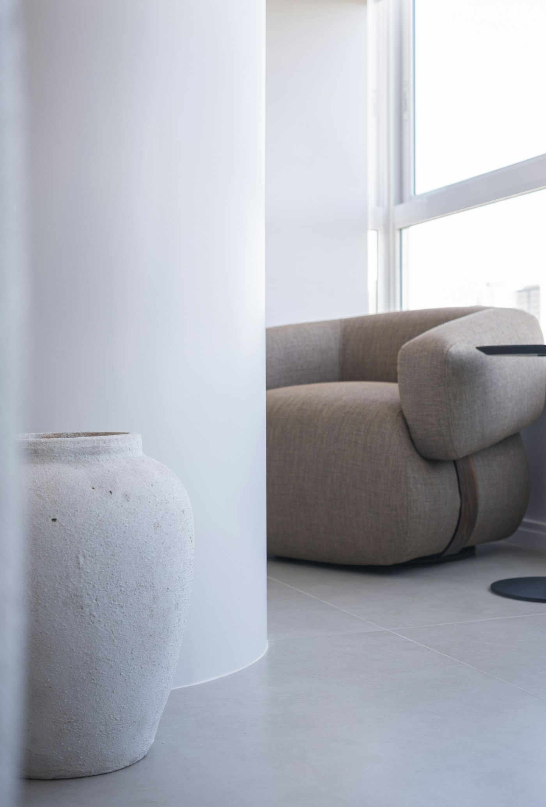
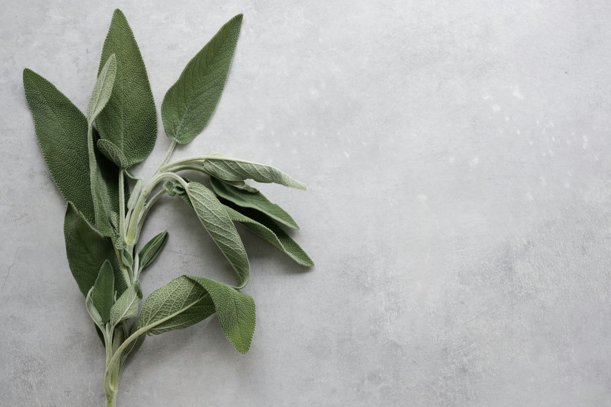

Ansiedade e stress
Espaço para compreender a tensão constante, a preocupação e o cansaço, e encontrar formas de lidar com eles.
Psicologia clínica · Dra. Estefânia Marques
Acompanhamento psicológico com escuta atenta, tempo para pensar e respeito pelo seu ritmo.
Um minuto para si · toque para pausar
Quando procurar
A cabeça não pára, mesmo quando o corpo já pede descanso.
Tenho vontade de falar, mas não sei com quem.
Algo mudou na minha vida e ainda estou a tentar perceber o quê.
Já não me reconheço nos meus dias.
As relações à minha volta pesam mais do que deviam.
Não sei bem o que se passa. Só sei que não estou bem.
Se se reconhece em alguma destas frases, uma conversa pode ser um bom primeiro passo.
Sobre
Psicóloga clínica
Na consulta de psicologia clínica, o primeiro objetivo é criar um espaço onde possa pensar em voz alta, sem pressa e sem julgamentos.
O sigilo profissional é um princípio central deste trabalho, e cada acompanhamento é pensado a partir de quem chega, do seu ritmo e do que procura.
Texto ilustrativo, a validar com a Dra. Estefânia Marques.
Áreas de acompanhamento

Espaço para compreender a tensão constante, a preocupação e o cansaço, e encontrar formas de lidar com eles.
Para os dias em que tudo custa mais do que antes e a vontade parece ter ficado pelo caminho.
Família, casal, amizades e a relação que temos connosco próprios.
Mudanças de vida, fins de ciclo, luto. Momentos em que é natural precisar de companhia para pensar.
a confirmar Áreas ilustrativas. A adequação de cada acompanhamento depende sempre de avaliação pela psicóloga.

Não é preciso ter tudo claro para começar. Basta querer olhar com calma.
Primeira consulta
01
Entra em contacto pelo canal que preferir. Combinamos um dia e uma hora que façam sentido para si.
02
Um primeiro encontro para conversar ao seu ritmo, explicar o que motivou o pedido de ajuda e perceber o que espera deste espaço.
03
Se fizer sentido para ambos, definimos juntos os objetivos e a forma de trabalhar. A frequência e a duração são combinadas caso a caso.
Perguntas frequentes
É a área da psicologia dedicada a compreender e acompanhar o sofrimento psicológico e as dificuldades emocionais, através da conversa e de uma relação de confiança.
Não. Pode procurar uma consulta simplesmente porque sente que precisa de falar com alguém. Na primeira conversa percebemos juntos o que faz sentido.
O sigilo profissional é um princípio central da prática psicológica. Os limites e a forma como a informação é tratada são explicados na primeira consulta.
a confirmar com a Dra. Estefânia
valores e duração a confirmar
Contacto
Deixe os seus dados e a Dra. Estefânia entra em contacto para combinar um primeiro encontro.